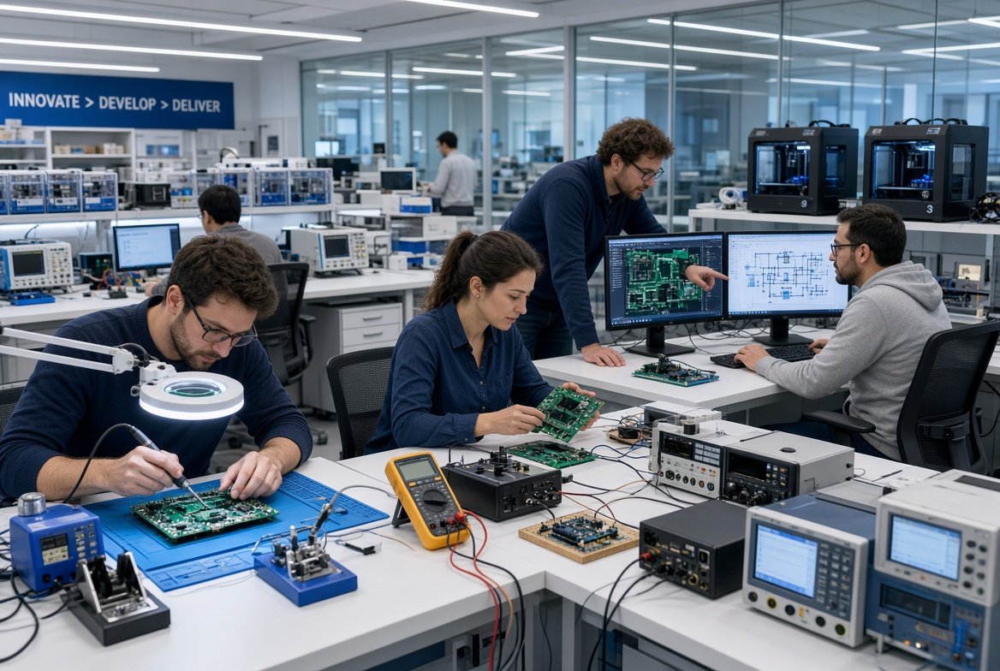
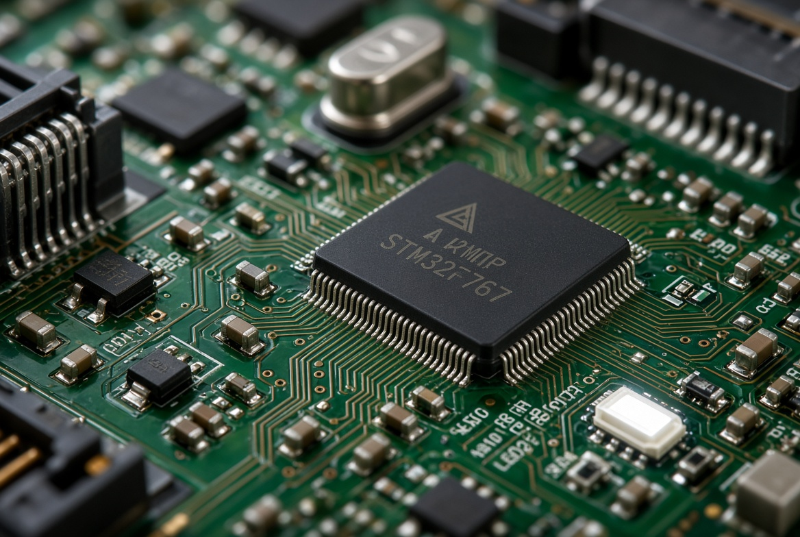
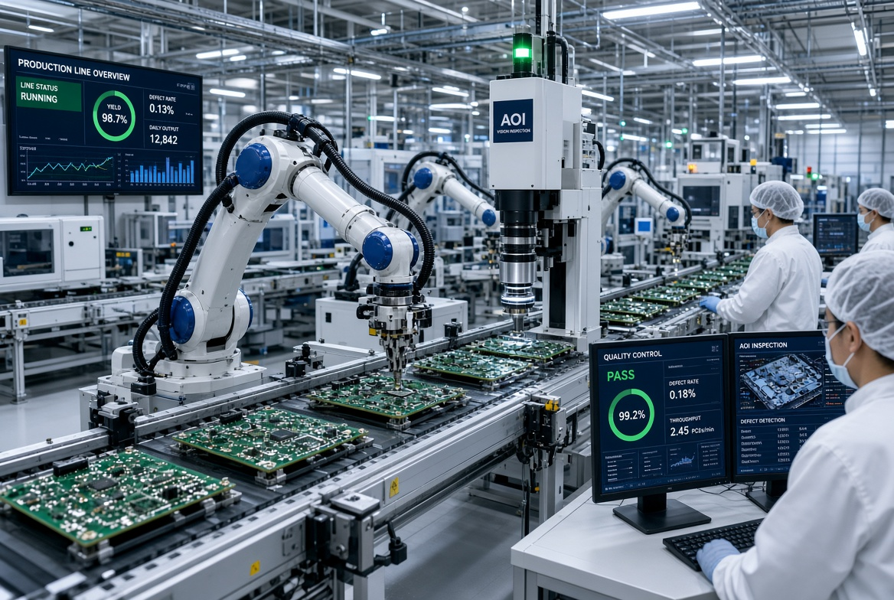
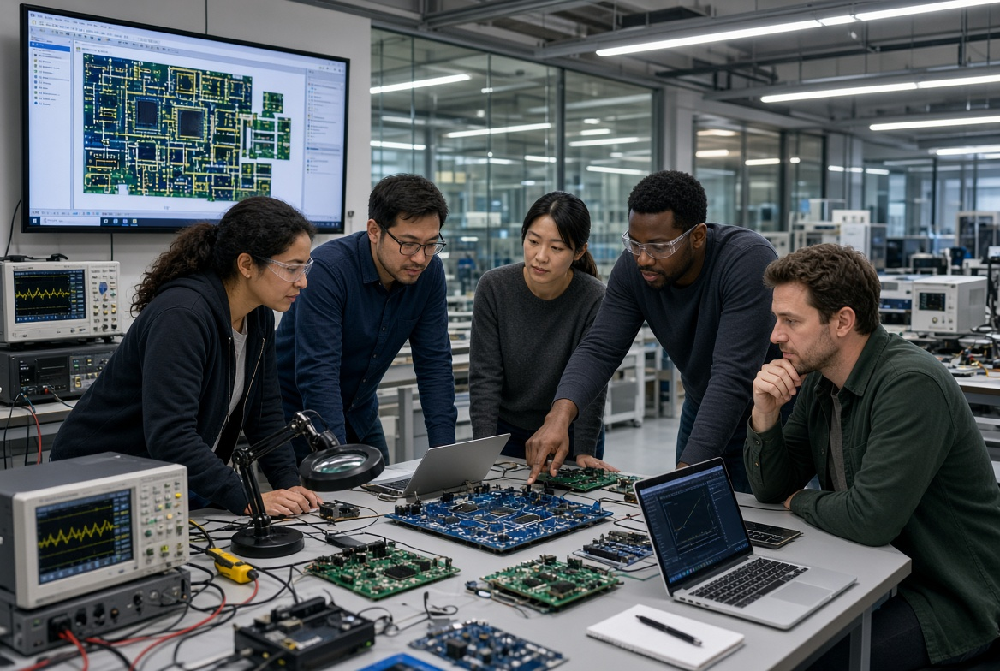
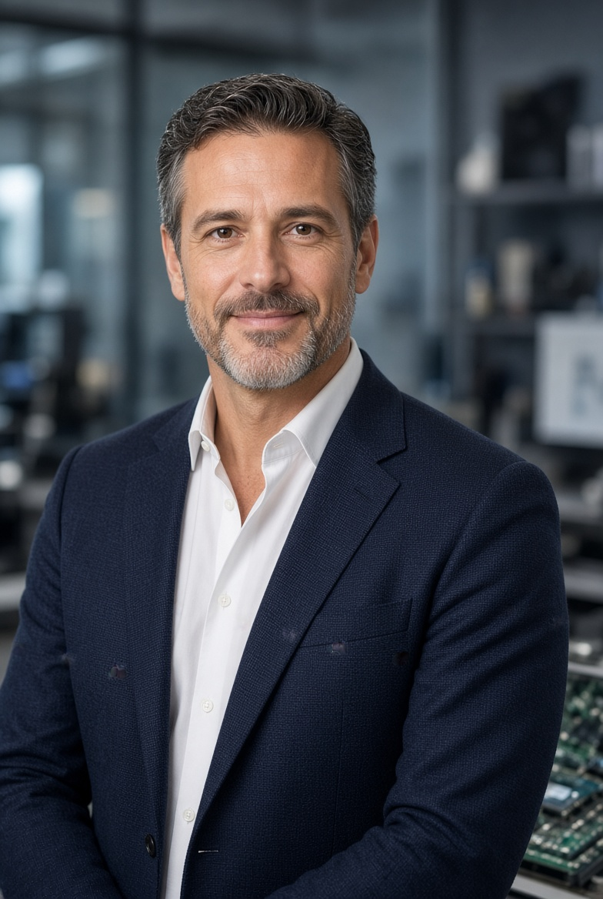
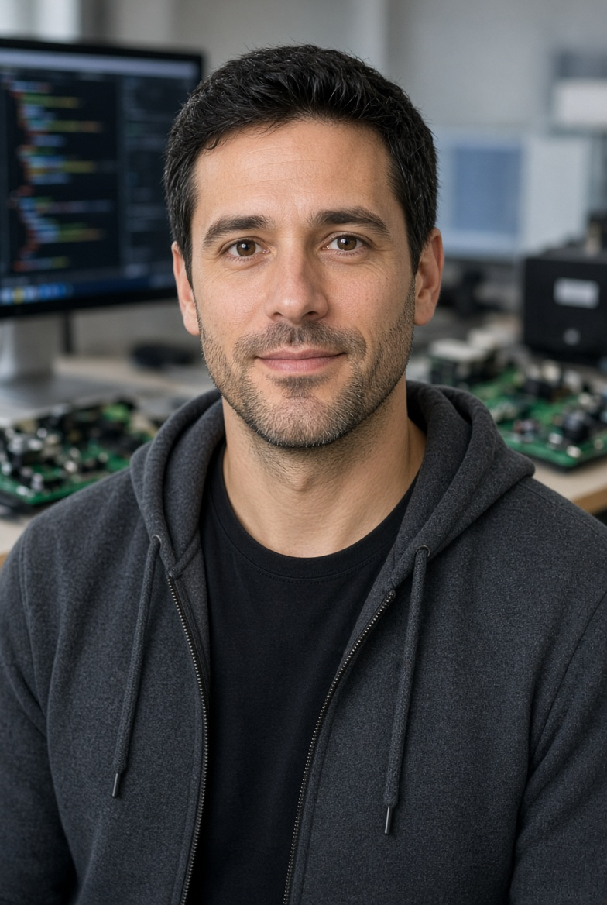

01 / MINŐSÉG
Következetes megbízhatóság
Szabályozott folyamatokkal és dokumentált ellenőrzésekkel dolgozunk, hogy termékeink teljesítménye kiszámítható legyen.
A CorePulse-nál hisszük, hogy a megbízható teljesítmény nem kompromisszum, hanem alapkövetelmény. Számítógép-komponenseinket úgy tervezzük és fejlesztjük, hogy a mindennapi használatban és a legnagyobb terhelés alatt is kiszámíthatóan működjenek.

A CorePulse egy olyan technológiai vállalat, amely a számítógép-hardverek fejlesztésére, gyártására és minőségellenőrzésére összpontosít. Célunk, hogy ügyfeleink számára hosszú távon megbízható, korszerű és jól skálázható megoldásokat kínáljunk.
A termékfejlesztés minden szakaszában a részletekre figyelünk: az alkatrészek kiválasztásától és az áramköri tervezéstől kezdve a hőkezelésen át egészen a végső tesztelésig. Munkánkat mérhető eredményekre és következetes minőségre alapozzuk.

Nem csupán alkatrészeket készítünk. Olyan stabil alapot adunk rendszerekhez, amelyeknek nap mint nap helyt kell állniuk.
Szabályozott folyamatokkal és dokumentált ellenőrzésekkel dolgozunk, hogy termékeink teljesítménye kiszámítható legyen.
Figyelemmel követjük a technológiai fejlődést, és a valódi felhasználói igényekre építve fejlesztjük megoldásainkat.
Ügyfeleinket nem csak a vásárlás pillanatában támogatjuk: szakmai segítséget és megbízható kapcsolattartást biztosítunk.
Minden termékünk átgondolt folyamaton megy keresztül. A cél minden lépésnél ugyanaz: stabil működés, ellenőrizhető minőség és hosszú élettartam.
Mérnökeink felmérik a felhasználási igényeket, megtervezik az architektúrát, majd prototípusokon vizsgálják a működést.
Modern gyártási technológiákkal és ellenőrzött beszállítói háttérrel gondoskodunk az állandó termékminőségről.
A kész komponensek teljesítmény-, kompatibilitási és stabilitási ellenőrzésen esnek át, mielőtt partnereinkhez kerülnek.

A megbízható termékek mögött elkötelezett emberek állnak. Fejlesztőink, gyártási szakembereink és ügyféltámogató kollégáink szorosan együttműködnek azért, hogy minden projektben a megfelelő megoldás szülessen meg.
Csapatunkat a műszaki kíváncsiság, a precizitás és a folyamatos fejlődés iránti igény köti össze.


Stratégia és vállalati irányítás

Terméktervezés és innováció
Tesztelés és validálás
Ismerje meg termékeinket, vagy vegye fel velünk a kapcsolatot, és segítünk megtalálni az igényeihez illeszkedő hardvermegoldást.
Kapcsolatfelvétel ↗